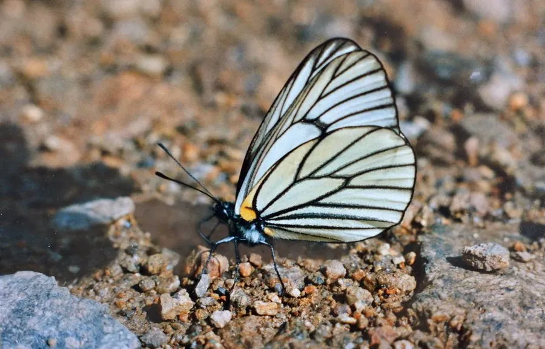

昆虫 · 动物界
小檗绢粉蝶 Aporia hippia

翅面白色、翅脉乌黑如墨线的粉蝶，前翅顶角镶黑边，幼虫专食小檗，栖息于华北与东北的山地灌丛。
- 分类
- 门节肢动物门纲昆虫纲目鳞翅目科粉蝶科属绢粉蝶属
- 栖息环境
- 海拔数百米至两千米的山地灌丛、林缘和沟谷，小檗成片处
- 地理分布
- 中国华北、东北和西北山地，以及朝鲜半岛和俄罗斯远东
- 保护级别
- 尚无专门保护评估；山地垦殖会减少寄主小檗的数量
物种志
小檗绢粉蝶的翅展约五至六厘米，翅面白色而略带绢质光泽，翅脉乌黑清晰，像用细墨线在白纸上勾出的网格，前翅顶角有宽阔的黑边，黑边内缘略呈锯齿状，后翅反面淡黄色，翅脉同样发黑。它的身体灰黑，披灰白色绒毛，触角呈棒状。雌蝶翅面略大，黑边也更宽，停歇时双翅合拢，露出反面的淡黄底色。
它分布于中国华北、东北和西北的山地，以及朝鲜半岛和俄罗斯远东，栖息在海拔数百米至两千米的山地灌丛、林缘和沟谷，尤其喜欢小檗成片生长的地方，成虫在春季出现，飞行缓慢，常沿灌丛边缘滑翔。幼虫以小檗属植物的叶片为食，卵产在寄主的枝干或附近枯枝上，以卵越冬，翌年春季孵化，幼虫群集取食，化蛹于枝条或落叶间，一年发生一代。它尚无专门保护评估，山地垦殖会减少寄主数量。
形态与习性
- 翅展约五至六厘米，翅面白而带绢光
- 翅脉乌黑清晰，如细墨线勾出的网格
- 前翅顶角有宽阔黑边，内缘略呈锯齿状
- 食性幼虫专食小檗属植物叶片
- 越冬以卵越冬，翌年春季孵化
- 发生世代一年一代，成虫春季出现
趣味知识
- 它的翅脉黑得醒目，白底黑线像一幅工笔白描，是绢粉蝶属的标志。
- 寄主小檗的枝上长满刺，幼虫却能在上面安然取食，化蛹也在枝间。
- 成虫飞得慢，常贴着灌丛边缘滑翔，很容易被观察者跟着走。